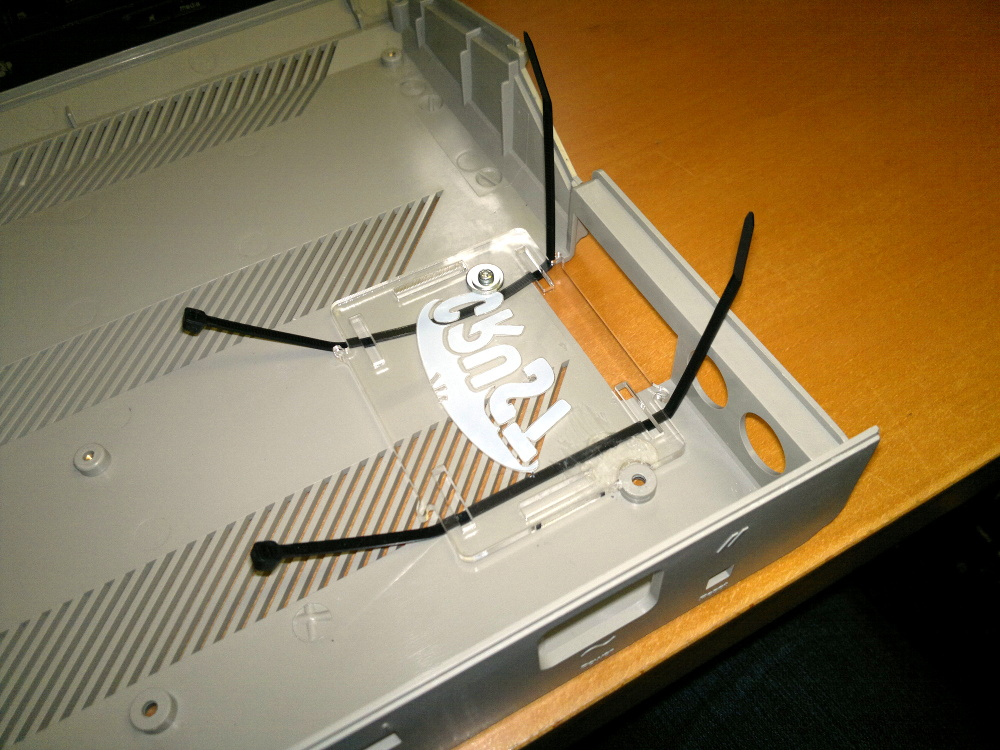
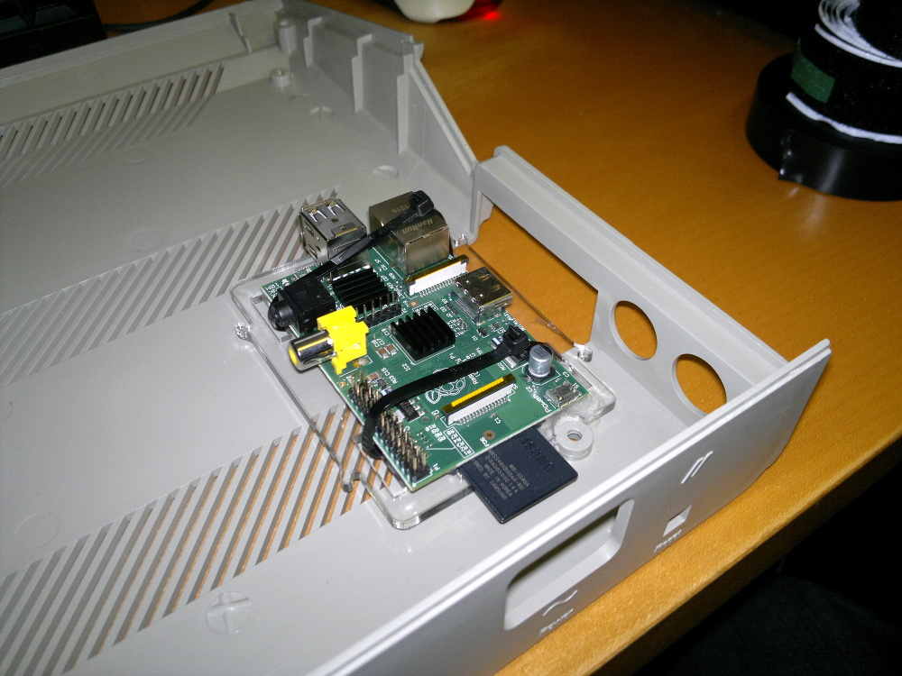

Mounting the Raspberry Pi
I decided to mount the Pi on the left of the Atari case so the HDMI port was easily accessible through the large opening in the ST case.
There are probably many better ways of doing it but I used the lid from a Raspberry Pi case which I screwed and glued to the Atari case and I then attached the Pi to it using sticky-backed velcro and tie-wraps. Despite being a bit of a hack it seems really sturdy.


Return to home page.